22个领域的巅峰之作
No.1 《无声告白》
类型：社会小说 伍绮诗（著）
我们终此一生，就是要摆脱他人的期待，找到真正的自己。2014美国年度图书第1名，击败斯蒂芬·金、村上春树等99位大牌作家！
莉迪亚死了，可他们还不知道。
莉迪亚是家中老二，李先生和李太太的掌上明珠，她遗传了母亲的蓝眼睛和父亲的黑头发。父母深信，莉迪亚一定能实现他们无法实现的梦想。莉迪亚的尸体被发现后，她的父亲内疚不已，母亲则一心报复。莉迪亚的哥哥觉得，隔壁的坏小子铁定脱不了关系，只有莉迪亚的妹妹看得一清二楚，而且，她很可能是唯一知道真相的人……
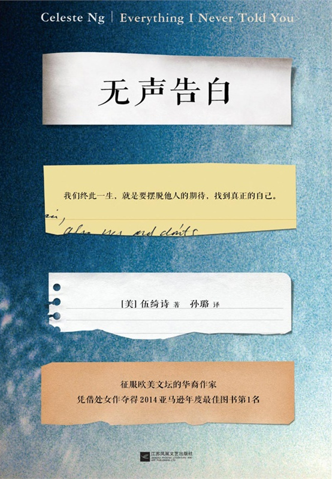
No.2 《岛上书店》
类型：情感小说 加布瑞埃拉·泽文（著）
每个人的生命中，都有最艰难的那一年，将人生变得美好而辽阔。现象级全球畅销书！一年之内畅销美英德法日等25国！2014感动全世界千万读者的阳光治愈小说！
A．J．费克里，人近中年，在一座与世隔绝的小岛上，经营一家书店。命运从未眷顾过他，爱妻去世，书店危机，就连唯一值钱的宝贝也遭窃。他的人生陷入僵局，他的内心沦为荒岛。
就在此时，一个神秘的包袱出现在书店中，意外地拯救了陷于孤独绝境中的A．J．，成为了连接他和小姨子伊斯梅、警长兰比亚斯、出版社女业务员阿米莉娅之间的纽带，为他的生活带来了转机。
小岛上的几个生命紧紧相依，走出了人生的困境，而所有对书和生活的热爱都周而复始，愈加汹涌。
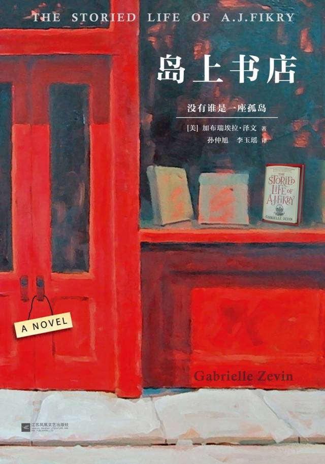
No.3 《教父》
类型：黑帮小说 马里奥·普佐（著）
习主席酷爱电影《教父》原著。2014首次无删节简体中文版《教父》三部曲！
《教父》是男人的圣经，是智慧的总和，是一切问题的答案。
教父的世界里，友谊，是通行的货币；忠诚，是最好的礼物；缄默，是唯一的规则。他藐视一切价值，不给警告，不虚张声势，不留余地。教父，就是自己的上帝。
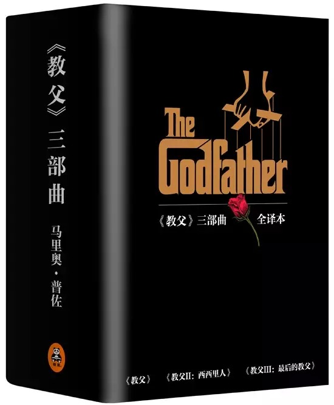
No.4 《所罗门的伪证》
类型：推理小说 宫部美雪（著）
蔡康永力荐推理神作，读完赞叹宫部美雪“把其他小说家逼太惨啦！”日本推理小说的最高峰。半个世纪以来，推理文坛一直在等待的划时代之作。
少年的死是一面镜子，映照出恶与善、虚伪与真实。
一九九〇年圣诞节的清晨，城东第三中学校园内的积雪之下发现一具尸体，死者是该校二年级的学生。这起很快被校方和警方认定为自杀的案件，却因一封匿名举报信揭发的谋杀疑云，渐渐演变成一场巨大的风波。
谎言和恶意层层累积，新闻媒体插手其中大肆渲染，大人们的欺瞒与懈怠让事件变得越发不可收拾。不良少年被指认为凶手，校长和班主任引咎辞职，新的牺牲者接二连三地出现……孩子们终于忍无可忍，他们要用前所未有的方式找寻真相——
一九九一年八月十五日，赌上人生的校内审判，即将开庭！
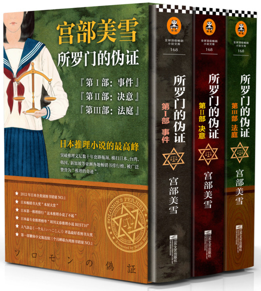
No.5 《杀人鬼》
类型：恐怖小说 绫辻行人（著）
《替身（Another）》作者绫辻行人，让全日本惊声尖叫25年的噩梦！简体中文无删节版恐怖来袭！人气插画师远田志帆绘制精美封面！
杀人鬼来了！他所到之处，将化为惨绝人寰的人间地狱！而在这场史无前例的惊悚杀戮背后，究竟隐藏着怎样的惊人玄机？当谜底揭晓的那一刻，没有读者能够抵挡这扑面袭来的震惊与恐怖！

No.6 《银河帝国：基地》
类型：科幻小说 阿西莫夫（著）
“人类历史上最好看的系列小说”，地球人公认的“科幻圣经”。《银河帝国》是人类想象力的极限，人类历史上最有趣迷人的故事，讲述人类未来两万年的历史。
人类蜗居在银河系的一个小角落——太阳系，在围绕太阳旋转的第三颗行星上，生活了十多万年之久。人类在这个小小的行星（他们称之为“地球”）上，建立了两百多个不同的行政区域（他们称之为“国家”），直到地球上诞生了第一个会思考的机器人。
在机器人的帮助下，人类迅速掌握了改造外星球的技术，开启了恢弘的星际殖民运动；人类在银河系如蝗虫般繁衍扩张，带着他们永不磨灭的愚昧与智慧、贪婪与良知，登上了一个个荒凉的星球，并将银河系卷入漫长的星际战国时代，直至整个银河被统一，一个统治超过2500万个住人行星、疆域横跨十万光年、总计数兆亿人口的庞大帝国崛起——银河帝国。
一个微妙的转折发生在银河帝国建国后的12020年。哈里·谢顿，这个刚满32岁的年轻数学家，开创了“心理史学”，这门学科能用数学公式准确推演全人类的未来——“预言”从此成为一门可以信任的科学，人类由此可以看见未来。
谢顿的第一个预言是：虽然毫无征兆，但已存在一万两千年之久的银河帝国即将灭亡。一时间，银河震动，帝国飘摇；皇帝、宰相、夺权者、反叛星球，各方势力立刻剑拔弩张，人类银河时代最伟大的传奇就此开启……
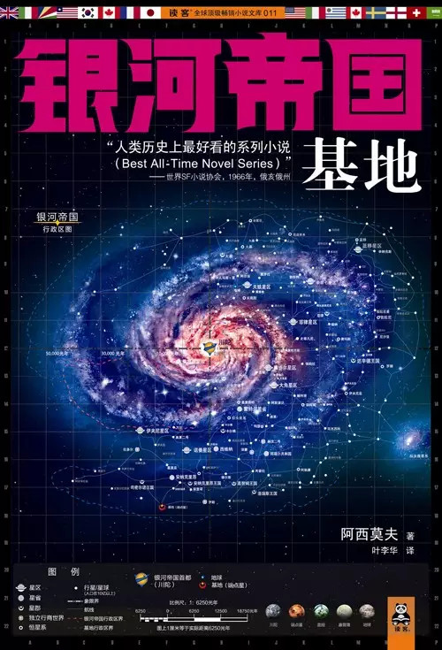
No.7 《地海传奇》
类型：奇幻小说 厄休拉·勒古恩（著）
唯一能与《魔戒》比肩的奇幻经典巨作，村上春树最爱女作家的代表作，宫崎骏动画的灵感来源。在地海的世界里沉浸五分钟，宛如夏日凉风吹拂般舒适轻松。
“地海传奇”系列是人类历史上最伟大的奇幻小说之一，自1968年出版以来，被译成20多种语言， 深受全世界读者的喜爱。“地海”是一个由浩瀚海洋与无数岛屿构成的世界，魔法是这个世界运行的法则与动力，精通法术的巫师握有改变世界的力量，但也必须谨慎维护万物之间的均衡。整个系列包括《地海巫师》《地海古墓》《地海彼岸》《地海孤儿》《地海故事集》与《地海奇风》六本，讲述了一个个关于勇气、责任、痛苦、自由、选择、成长、友谊、爱情和死亡的故事，带读者进入了一个波澜壮阔的幻想世界。
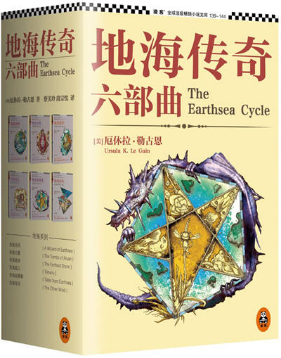
No.8 《卑鄙的圣人：曹操》
类型：历史小说 王晓磊（著）
曹操去世1791年来，曹操本人最服气的曹操全传。
历史上的大奸大忠都差不多，只有曹操大不同！
曹操的计谋，奸诈程度往往将对手整得头昏脑涨、找不着北，卑鄙程度也屡屡突破道德底线，但他却是一个心怀天下、体恤众生的圣人；而且他还是一个柔情万丈、天才横溢的诗人；最后他还是一个敏感、自卑、内心孤独的普通男人。
翻开本书，您将了解中国历史上这个独一无二的家伙，进入曹操尘封了两千年的精彩内心世界。
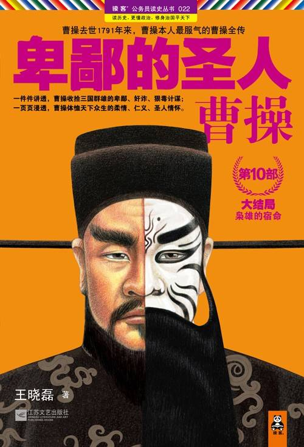No.9 《华杉讲透<孙子兵法>》
类型：古代兵法 华杉（著）
这回彻底读懂《孙子兵法》！通俗通透解读经典战例，逐字逐句讲透兵法原意。请看2000多年来，被误解最多的兵法原意！
《孙子兵法》6111字，似乎每个字都艰深玄奥，让很多人望而却步；其实，只要抓住兵法的根本思想，就会发现处处豁然开朗、字字明明白白。
本书作者华杉，研究孙子兵法二十余年；在本书中，抓住兵法根本思想，通过155个经典战例，将《孙子兵法》的原意剖析得详尽透彻。同时援引2000多年来，解读《孙子兵法》的传世注家曹操、杜牧等11人的注解，从不同角度还原兵法原意。
全书通俗流畅，精彩纷呈；背水一战、围魏救赵等经典战例，更是讲解得令人身临其境，犹如置身战场上空，看交战双方兵马调动，浴血奋战，在震天的厮杀声中演绎着兵法的深邃思想。
翻开本书，直窥《孙子兵法》堂奥，既简单、又深邃、既朴实、又玄妙；开启一场通往智慧的非凡阅读体验。
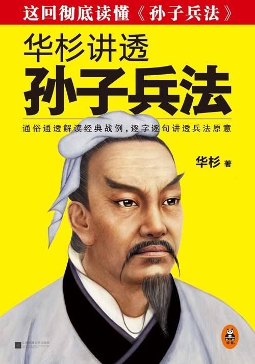No.10 《小李飞刀》
类型：武侠小说 古龙（著）
真正深入街头巷尾的文学经典！史上最值得收藏的古龙文集，大陆唯一合法授权华丽新版！古龙”四大巅峰系列”之一！
《小李飞刀：多情剑客无情剑》一直被公认为古龙武侠作品的巅峰之作和最高成就。它不仅是一部阐明武学真谛的作品，还是一部写尽人间世态炎凉的人情历史画，更是一部触动社会现实，探索人生哲理的警世名著。
本书问世至今，小李飞刀李寻欢作为华语世界最最著名的文学形象，感动着一代又一代的读者，被一遍又一遍翻拍成影视剧，总霸占收视率榜首。全书情节环环相扣，人物栩栩如生，读者虽然时刻处在刀光剑影之中，眼睛却始终被人性中最真挚的爱情、友情感动的热泪长流。
翻开本书，走进大师古龙精彩纷呈的文学世界，收获人生中永不可丢失的勇气、侠义、爱与宽容。
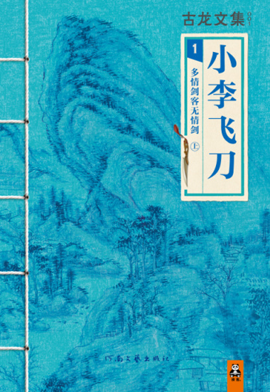
No.11 《大江东去》
类型：当代文学 阿耐（著）
唯一可以媲美《平凡的世界》的文学作品。国家的三十年，也是个人的三十年。著名财经作家吴晓波鼎力推荐。
《大江东去》是著名财经作家阿耐创作的一部全景表现改革开放30年来中国经济和社会生活变迁历史的长篇小说。
小说以经济改革为主线，全面、细致、深入地表现了1978年以来中国改革开放30年的伟大历史进程。展现了中国改革开放30年来经济领域的改革、社会生活的变化、政治领域的变革以及人们精神面貌的变化等方方面面；生动而真实地刻画了活跃在改革开放前沿的代表人物，如国营企业的领导、农民企业家、个体户、政府官员、海归派、知识分子等等。人物典型深刻，故事跌宕磅礴。
宋运辉，黑五类出身，从小受尽政治歧视，但他把握住1978年恢复高考的机会，上大学、包分配、下基层，成为一位国企技术人员。他钻研技术改革，却在惶然与痛苦中蜕变为国营经济官僚的典型。
宋运辉的姐夫雷东宝，带领全村人经历了包产到户、包干到户、乡镇企业、技改、联营厂、挂靠、红帽子、转制等一系列变化，十五年来一心一意为村民谋福利，俨然一个农村改革的典型代表，最后却因开村镇公司亏损反遭村民背叛。
在宋运辉和雷东宝之间，从夹缝里挣扎出一条生路的个体户杨巡，从卖馒头开始，做过倒爷、修过市场、建过宾馆。举手即是商机，投足却是陷阱。他多次面临灭顶之灾，但最终拥有自己的产业，成为了那个时代个体经济的典型代表。
从表现历史的深度和广度上来说，在表现中国改革开放历史进程这一题材里，这部作品具有很重的分量和特殊意义，被誉为“描写改革开放30年的第一小说”，荣获中宣部“五个一工程奖”。
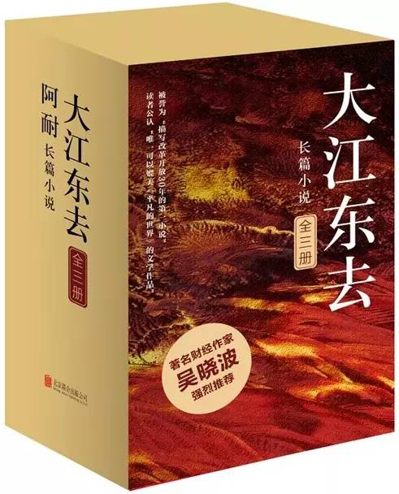No.12 《微微一笑很倾城》
类型：青春文学 顾漫（著）
幸福就是，我喜欢你偏偏你也只喜欢我！顾漫订制大礼，寄给不离不弃的你！独家番外，强势围观大神和微微的幸福生活！ENO手绘7大人设+战斗海报！
如果你“惨”遭抛弃后，忽然有个很强很拽很不可一世的男人向你求婚，你怎么反应？贝微微同学的反应是：“大神……你被盗号了么＝ ＝”
这个世界也太不真实了吧！前脚“前夫”才“移情别恋”娶了第一美女，后脚就有第一高手来求婚？还说要给一个更盛大的婚礼？名校计算机系的系花贝微微一边囧着，一边……飞快地嫁了。
如果一个被无数人仰望的传奇人物、名校顶尖牛人，第一次见面就反问你，“我们什么时候不是那种关系了”，你会怎么反应？那人出身世家，运动全能，外表风雅，气质清华，举止从容，本质……土匪……还傲慢得要死要活……
这这这样的男人……忽然送上门……
贝微微抵抗无力，只能被他拖着拽着往前走了……
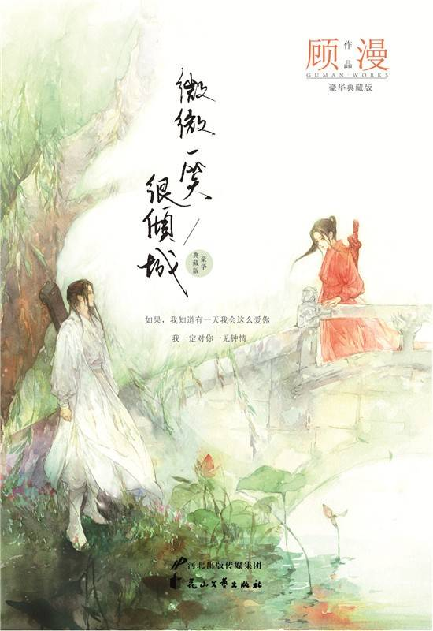
No.13 《好小猫》
类型：文集 顾湘（著）
小猫就是真善美。80后天才作家顾湘倾情之作，精选63幅手绘插画，附赠8张精美卡片。每只小猫，都有灵魂！
顾湘从市区的家里搬出，住到郊区乡下一栋三层的小房子里。她带着两只心爱的小猫，一只叫小黄，一只叫双色球，成为一个“住得很远的人”。
顾湘说：“在小猫那里发生的时间，比我的要快。”每每念及此，她便分外不舍。从前她喜欢出行，后来有了小猫，心里挂念，宁愿在家里与小猫御梦神游。
她对小猫百般溺爱，清晨被小猫叫醒，陪它们在阳台玩耍。顾湘为她的小猫，以及世间所有小猫，画了很多画，写了很多字。每只小猫，都有灵魂。它们的国度，充满奇幻与曼妙。这本书献给你，也献给你的好小猫。
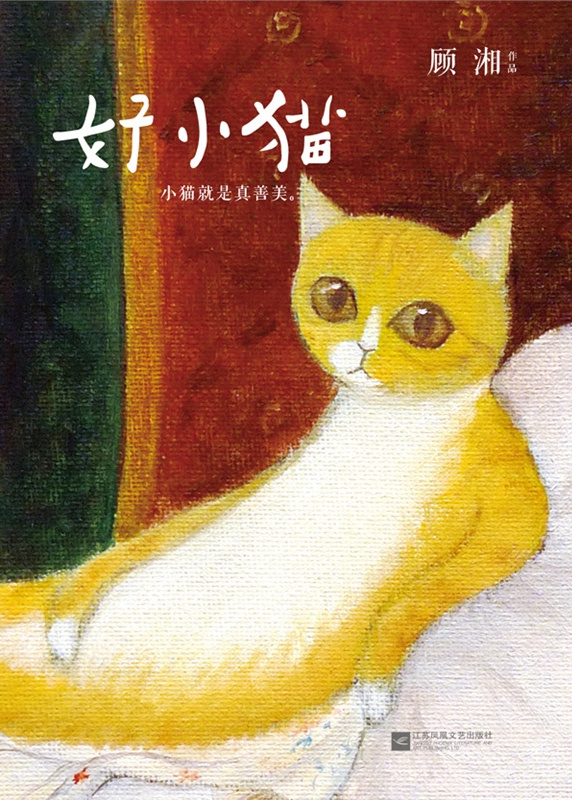
No.14 《一人食》
类型：饮食文化 蔡雅妮，张爱球（著）
一个人也要好好吃饭，一个人，也要过得精致温暖！20位个性十足的主人公，用他们的独家美味，表达了对生活最极致的敬意和热爱。
《一人食》想告诉你：一个人吃饭，更不能随便，不能将就，它是静静享受、品味快乐的最佳时光，一个人也要好好吃饭！食物有超乎想象的治愈力量，它能填饱你的肚子，更能治愈你的孤独。
本书记录了20种有故事的食物和有态度的生活方式，用直抵内心的文字，真实而感人的故事，向所有在热闹的城市中独自吃饭的人传递一种正能量。不管有没有人陪你吃饭，愿你都能从一道精心准备的食物中，找到治愈自己的简单幸福。
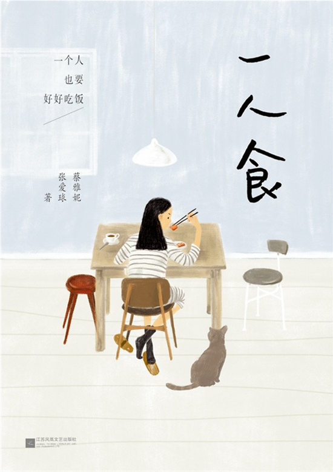
No.15 《轻断食》
类型：减肥瘦身 麦克尔·莫斯利，咪咪·史宾赛（著）
唯一正宗！《纽约时报》两个整版报道：“《轻断食》远远不只让你瘦，更获得心灵的自由。”大S、章子怡、杨幂、卷福，全球顶级明星正在轻断食！
“断食是健康瘦身的秘密。”
这个秘密曾广泛流传在佛教僧侣、瑜伽行者之中。这些人身材精瘦，精神力超然，活得也很长寿。2500年来，断食的秘密却一直被忽视。
直到2012年，麦克尔·莫斯利医生的一次减肥研究，将他引向断食中寻求答案。他走访最前沿的科学家，扎进断食的古老宗教，并大胆用自己做实验，将保守了数千年的断食经验与当代科学相结合，终于发明了针对现代人的全新减肥方法：轻断食。
轻断食只是要你回归最自然的饮食状态：每周5天正常饮食，只需2天稍加控制，就能坐享减肥奇迹！轻断食不仅改变饮食习惯，也改造你的心智，最终超越减肥，变成你的生活方式，你的心灵也能达到历史上断食修行者那样的生命境界。这就是轻断食的根本力量。
本书出版一年来，迅速带领全球6亿人投身轻断食革命，轻断食正从根本上改变人们的生命体验。
翻开本书，立刻开始轻断食，回归自然饮食，坐享瘦身奇迹，彻底改变生命！
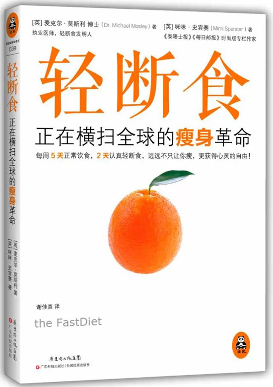
No.16 《照片里的20世纪全球史》
类型：世界通史（图文集） 尼克·雅普（著）
全球销量第一的20世纪历史照片集，3246幅经典老照片，讲透地球过去百年历史。
图文套书，10本，共3246幅照片，用照片来呈现20世纪的10个十年。按年代划分，从1900s到1990s；每本书就是一个年代，如《1900s》《1910s》……每本书收录300多幅照片；照片按照主题划分为政治热点、风云人物、职业生活、休闲娱乐、科技、交通、艺术、运动、儿童、人间百态等；每幅照片均有注解。每个主题前均有简短导读，比如，《1930s》这本书的“艺术”主题前面，会有两三百字的导读。每本书开头也有简短导读概述那个年代，大约一千字左右。已有12种文字的版本：英文、日文、法文、德文、西班牙文、意大利文、波兰、土耳其文、挪威文、丹麦文、瑞典文、繁体中文。

No.17 《我们台湾这些年》
类型：人文社科 廖信忠（著）
讲述台湾老百姓自己的故事。60年来第一本，让13亿大陆人真正了解台湾普通民众真实生活的书。一个台湾青年写给13亿大陆同胞的一封家书。
作者的话——
关于真正的台湾，你又了解多少？
这是我常常问大陆朋友的问题。
我明白，对于很多大陆朋友来说，台湾往往只是一个空洞的政治概念；大多数人并不清楚台湾过去30年究竟发生了什么？台湾普通民众到底过着怎样的生活？
其实，台湾30年来的社会巨变，绝不亚于改革开放30年的大陆。
1975年蒋介石逝世后，台湾局势骤然微妙；蒋经国于70年代末力排众议，强力发动台湾社会变革，直接推动了台湾的经济腾飞；接下来的几十年，李登辉、陈水扁、马英九等政治人物粉墨登场，台湾社会风起云涌，每一个最普通的台湾人，都卷入其中，日常生活发生了翻天覆地的变化；这30多年的社会巨变，也给我和我的家人，留下了许许多多令人难忘的欢笑与泪水。
本书从我出生的1977年写起，以一个台湾平民的视角，向您细述30多年来台湾社会的大事件和小故事，与您分享过去30年台湾老百姓最真实的日常生活和悲喜人生。
读完本书，您多半会感叹一声：这些年，原来大家都不容易！
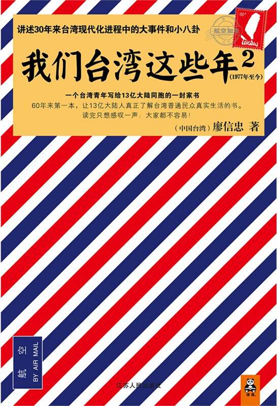
No.18 《别再为小事抓狂》
类型：心灵感悟 理查德·卡尔森（著）
从此掌握自己的情绪，内心变得安静而有力！一本令你掌握情绪、改善情绪的心灵指南！超过一亿人读过本书，全球最畅销心灵书籍。
如果今天是你生命中的最后一天，你还会选择为鸡毛蒜皮的小事抓狂吗？
本书想要告诉你，如果把每一天都当作最后一天来活，鸡毛蒜皮的小事就会消失，重要而美好的事物就会自动浮现。
这是一本令你掌握情绪、改善情绪的心灵指南，书中提供了100个瞬间见效的“不抓狂”小技巧，比如，在你快失控的时候，不妨停顿一下，问问自己：一年后，你还会那么在乎这件事吗？你会发现，眼前这些“天大的事”，其实都只是微不足道的小事，完全不值得为此毁掉一整天的好心情，或是让失控的情绪伤害到身边无辜的人。与此同时，你会体验到安静的强大力量，你越沉着冷静，内心就越强大，足以面对生活中的一切状况。
翻开本书，从此掌握自己的情绪，内心变得安静而有力。
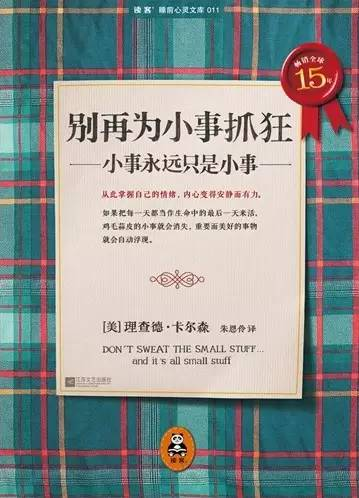No.19 《佛陀传》
类型：宗教 一行禅师（著）
全世界佛学爱好者的必读书和入门书！佛法的起源与奥妙，就这样在您面前徐徐展开。本书原名《故道白云》。
自从1991年在美国第一次出版以来，二十多年的时间，本书已成为全世界佛学爱好者的必读书和入门书。
一行禅师沉稳迷人地讲述了佛陀释迦牟尼从出生、成长、出家、修行、得道、弘法，直至灭寂的完整一生。
世人似乎是从本书中第一次发现，佛陀从来不是神，而是一个人。他没有任何神通，和我们一样会困惑和痛苦，他也有家人，有妻子和儿子，只是他离开了他们，独自走上了修行成佛，拯救众生的道路。
书中的佛陀不仅伟大、慈悲，而且真实可爱；你看到的正是2500年前的佛陀本人，看到他和大家一起坐在地上吃饭，他吃饭的威仪令人着迷，他吃完饭，和别人一样自己收拾好餐具，放好，一举一动间，散发着佛法的灵性光芒。
娓娓道来的佛陀生平故事，融汇着佛法的精深奥妙；无论你有没有佛学根基，阅读本书，都是一次充满喜乐和感动，受益匪浅的修行。
本书原名《故道白云》，为了使更多读者能够了解这部伟大的著作，我们在再版时使用了更加简单和直白的名字：《佛陀传》。
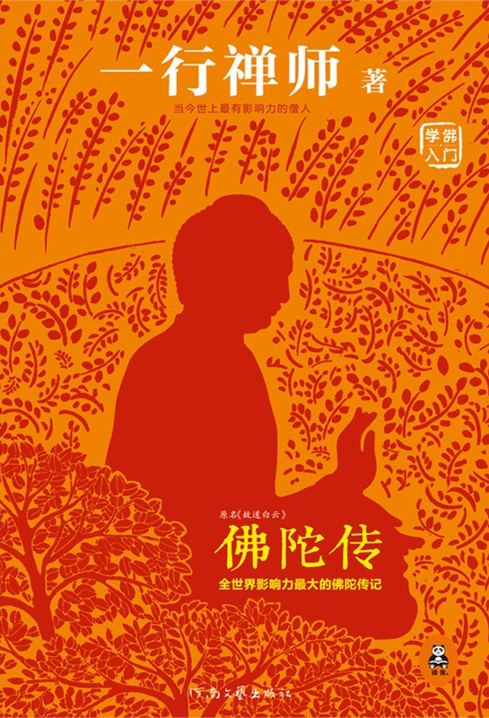
No.20 《参与感》
类型：市场营销 黎万强（著）
小米终于开口！传统企业互联网转型第一书！揭开小米4年600亿奇迹背后的理念、方法和案例。社会化营销圣经！
翻开本书，就是翻开一个崭新的商业时代。
当小米开发产品时，数十万消费者热情地出谋划策；当小米新品上线时，几分钟内，数百万消费者涌入网站参与抢购，数亿销售额瞬间完成；当小米要推广产品时，上千万消费者兴奋地奔走相告；当小米产品售出后，几千万消费者又积极地参与到产品的口碑传播和每周更新完善之中……
这是中国商业史上前所未有的奇观。消费者和品牌从未如此相互贴近，互动从未如此广泛深入。通过互联网，消费者扮演着小米的产品经理、测试工程师、口碑推荐人、梦想赞助商等各种角色，他们热情饱满地参与到一个品牌发展的各个细节当中。
小米现象的背后，是互联网时代人类信息组织结构的深层巨变，是小米公司对这一巨变的敏感觉察和精确把握。
作为小米联合创始人，本书作者黎万强，真诚有趣地向你讲述小米公司创业几年来的内部故事，从公司创立到产品开发，从产品设计到品牌建设，从日常运营到营销推广，从服务理念到公司理念，等等等等，通过一个个真实的小细节、小故事，将外界觉得不可思议的事情，清晰透彻地道出其中的逻辑必然，并慷慨地将其独创的“参与感三三法则”和盘托出。
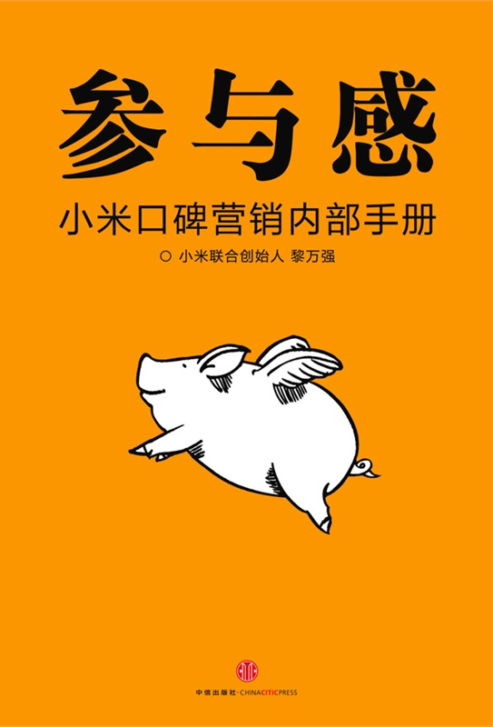
No.21 《罗小黑战记》
类型：漫画 MTJJ（著）
全民追捧的国民级动画！中国独立动画制作人MTJJ诚意出品，京东众筹近三十万，动画视频点击过亿！
莉雨夜，一只流落街头的小黑猫，被少女罗小白带回家，起名罗小黑。罗小黑不是一只普通的猫咪，它极通人性，会蹲马桶，不吃猫粮，长长的尾巴甚至能分裂成多个名为“黑咻”的生物体。另一方面，名为“谛听”的神秘人物，发动手下三匹长着翅膀的狼，搜寻着罗小黑的下落。不久，罗小白带着小黑到乡下探望堂哥阿根和爷爷，由此发生了种种离奇玄幻事件。
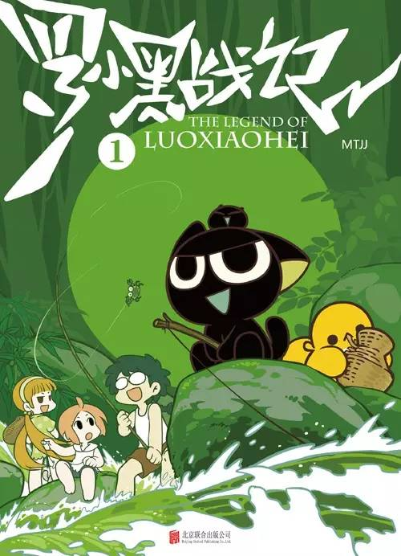No.22 《最美最美的中国童话》
类型：童话故事 汉声杂志社（著）
“好妈妈”尹建莉盛赞“中华文化瑰宝”，中国传统文化童书NO.1！台湾汉声献给中国儿童的世纪经典。
《最美最美的中国童话》出版传奇
您手中的这套《最美最美的中国童话》，是中国儿童读物出版历史上，最经久不衰的出版传奇。
①1920年—1931年，北京大学、中山大学的学者在战火中抢救了一大批中国民间传说及童话故事，为传统文化保留下极其珍贵的第一手资料。
②五十年后的1981年，台湾汉声出版社在北大、中大前辈的基础上，继续深入民间，上山下乡，遍访民间故事传人，形成本书最初的故事库。 在采集而来的故事的基础上，在不失原有主题和趣味的状态下，改写成为完整、符合现代价值观的故事。在编写的过程中，汉声编辑会到游乐场边邀请正在玩耍的小朋友来听讲，以“听到故事开头的小朋友舍不得离开去玩皮球，一定要听完才罢休”为标准，最后才完成定稿。所以中国童话里的每一个故事，都能迅速地让孩子入迷，沉浸在传统民间故事瑰丽的想象力之中。
③本书不仅以故事吸引孩子，每一幅插图也饱浸传统文化的精髓。汉声从传统年画、皮影、刺绣、壁画、雕塑石刻中汲取技法，以毛笔、宣纸细细描绘，将故事中最精彩的部分化为一幅幅鲜活灵动，具有传统风味的图画，让孩子能在阅读精彩故事之际，同时习得中华传统美术的精髓。
④本书自从1982年出版以来，迅速风靡华人世界，三十年来畅销不衰，成为一代又一代华人共同的精神财富，成为中文出版史上的一个奇迹。
⑤2012年，在初版三十周年之际，读客图书正式引进《最美最美的中国童话》，一个风靡全球华人世界数十年的传奇出版物，首次回到了故土。
翻开本书，带孩子回归神奇、可爱、充满中华传统智慧的欢乐宝库。（来源）
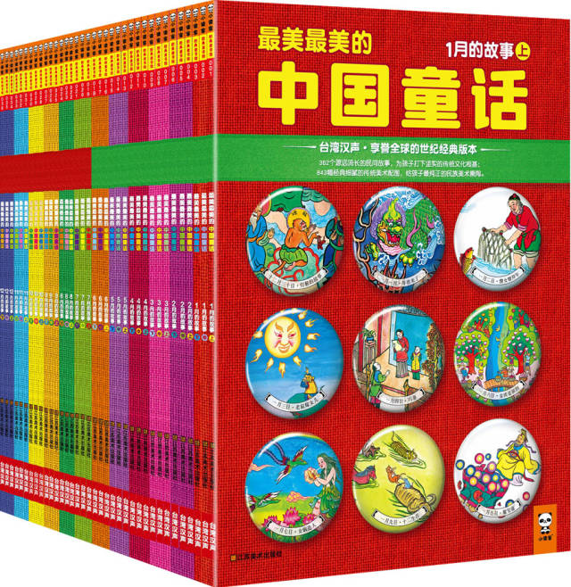